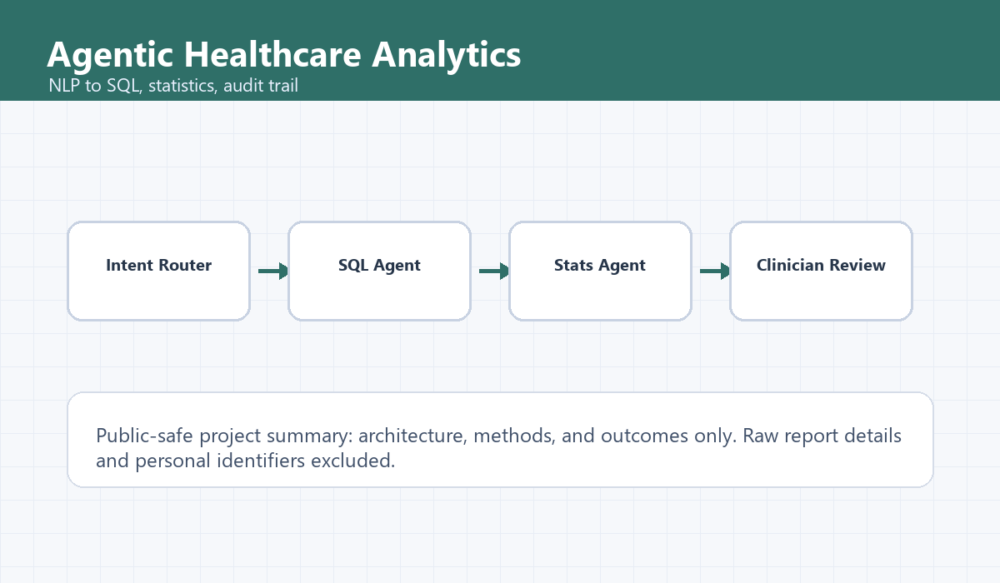

Agentic Healthcare Analytics Chatbot
Problem
Clinical and research users need auditable healthcare data workflows.
Method
Multi-agent analytics workflow with routing, SQL, statistics, charts, and human review.
Evidence
Sanitized capstone-backed summary with private data excluded.
Evaluation
Review SQL trace quality, answer usefulness, and human approval boundaries before production.
Limits
Public version excludes private data and does not claim clinical deployment.